Curve Detectors
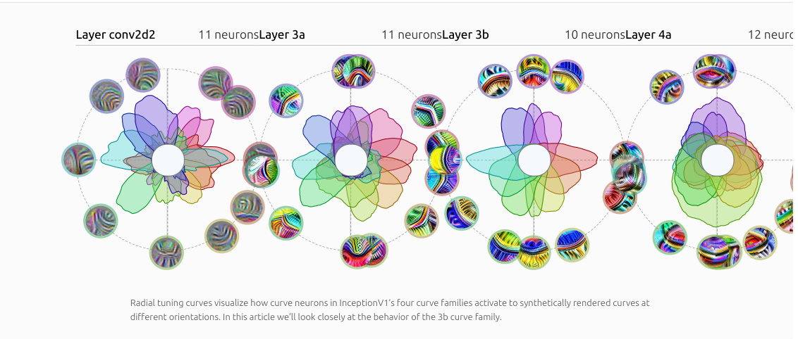
Layer conv2d2 11 neuronsLayer 3a 11 neuronsLayer 3b 10 neuronsLayer 4a 12 neuro
Radial tuning curves visualize how curve neurons in InceptionV1’s four curve families activate to synthetically rendered curves at
different orientations. In this article we’ll look closely at the behavior of the 3b curve family.
AUTHORS AFFILIATIONS PUBLISHED DOI Nick Cammarata OpenAI June 17, 2020 10.23915/distill.00024.003 Gabriel Goh OpenAI Shan Carter OpenAI Ludwig Schubert OpenAI Michael Petrov OpenAI Chris Olah OpenAI
Contents
A Simplified Story of Curve Neurons
Feature Visualization Dataset Analysis Visualizing Attribution Human Comparison Joint Tuning Curves Synthetic Curves Radial Tuning Curve The Curve Families of InceptionV1 Repurposing Curve Detectors The Combing Phenomenon
Conclusion
This article is part of the Circuits thread, an experimental format collecting invited short articles and critical commentary delving into the inner workings of neural networks.
← PREVIOUS ARTICLE NEXT ARTICLE → An Overview of Early Vision in InceptionV1 Naturally Occurring Equivariance in Neural Networks
Every vision model we've explored in detail contains neurons which detect curves. Curve detectors in vision models have been hinted at in the literature as far back as 2013 (see figures in Zeiler & Fergus [1] ), and similar neurons have been studied carefully in neuroscience [2] . We briefyl discussed curve in our earlier overview of early vision, but wanted to examine them in more depth. This article is the first part of a three article deep dive into curve detectors: their behavior, how they're built from earlier neurons, and their prevalence across models. We're doing this because we believe that the interpretability community disagrees on several crucial questions. In particular, are neural network representations composed of meaningful features — that is, features tracking articulable properties of images? On the one hand, there are a number of papers reporting on seemingly meaningful features, such as eye detectors, head detectors, car detectors, and so forth [3, 4, 5, 6, 7, 8] . At the same time, there's a significant amount of skepticism, only partially reflected in the literature. One concern is that features which seem superficially to be meaningful may in fact not be what they appear [9] . Several papers have suggested that neural networks primarily detect textures or imperceptible patterns [10, 11, 12, 13] rather than the kind of meaningful features described earlier. Finally, even if some meaningful features exist, it's possible they don't play an especially important role in the network [14] . Some reconcile these results by concluding that if one observes, for example, what appears to be a dog head detector, it is actually a detector for special textures correlated with dog heads.
This disagreement really matters. If every neuron was meaningful, and their connections formed meaningful circuits, we believe it would open a path to completely reverse engineering and interpreting neural networks. Of course, we know not every neuron is meaningful, 1 but we think it's close enough for this path to be tractable. However, our position is definitely not the consensus view. Moreover, it seems too good to be true, and rings of the similar failed promises in other fields 2 — skepticism is definitely warranted!
We believe that curve detectors are a good vehicle for making progress on this disagreement. Curve detectors seem like a modest step from edgedetecting Gabor filters, which the community widely agrees often form in the first convolutional layer. Furthermore, artificial curves are simple to generate, opening up lots of possibilities for rigorous investigation. And the fact that they're only a couple convolutional layers deep means we can follow every string of neurons back to the input. At the same time, the underlying algorithm the model has implemented for curve detection is quite sophisticated. If this paper persuades skeptics that at least curve detectors exist, that seems like a substantial step forward. Similarly, if it surfaces a more precise point of disagreement, that would also advance the dialogue.
A Simplified Story of Curve Neurons
Before running detailed experiments, let's look at a high level and slightly simplified story of how the curve 10 neurons in 3b work.
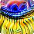
Each neuron's ideal curve, created with feature visualization, which uses optimization to find superstimuli.
Each curve detector implements a variant of the same algorithm: it responds to a wide variety of curves, preferring curves of a particular orientation and gradually firing less as the orientation changes. Curve neurons are invariant to cosmetic properties such as brightness, texture, and color.
3b:379 Activations by Orientation
Curve detectors collectivelyLaterspin thisan aartillcorientle we'll lookationsin depth. at activations to synthetic curve images.
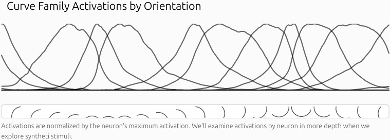
Curve Family Activations by Orientation
Activations are normalized by the neuron's maximum activation. We'll examine activations by neuron in more depth when we
explore syntheti stimuli.
REPRODUCE IN A NOTEBOOK
Curve detectors have sparse activations, firing in response to only 10% of spatial positions 3 across ImageNet, and usually activating weakly when they do fire. When they activate strongly, it's in response to curves with similar orientation and curvature to their feature visualization.
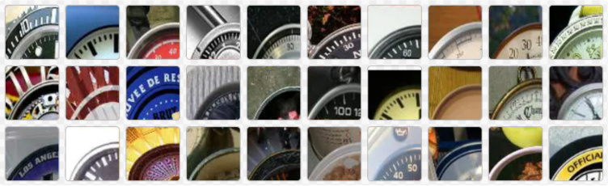
The images from the dataset that activate 3b:379 all contain curves that are similar to its ideal curve.
It’s worth stepping back and reflecting on how surprising the existence of seemingly meaningful features like curve detectors is. There’s no explicit incentive for the network to form meaningful neurons. It’s not like we optimized these neurons to be curve detectors! Rather, InceptionV1 is trained to classify images into categories many levels of abstraction removed from curves and somehow curve detectors fell out of gradient descent.
4 Moreover, detecting curves across a wide variety of natural images is a difficult and arguably unsolved problem in classical computer vision . InceptionV1 seems to learn a flexible and general solution to this problem, implemented using five convolutional layers. We’ll see in the next article that the algorithm used is straightforward and understandable, and we’ve since reimplemented it by hand.
What exactly are we claiming when we say these neurons detect curves? We think part of the reason there is sometimes disagreement about whether neurons detect particular stimuli is that there are a variety of claims one may be making. It’s pretty easy to show that, empirically, when a curve detector fires strongly the stimulus is reliably a curve. But there are several other claims which might be more contentious:
-
Causality Curve detectors genuinely detect a curve feature, rather than another stimulus correlated with curves. We believe our feature visualization and visualizing attribution experiments establish a causal link, since “running it in reverse” produces a curve.
-
Generality: Curve detectors respond to a wide variety of curve stimuli. They tolerate a wide range of radii and are largely invariant to cosmetic attributes like color, brightness, and texture. We believe that our experiments explicitly testing these invariances with synthetic stimuli are the most compelling evidence of this.
-
Purity: Curve detectors are not polysemantic and they have no meaningful secondary function. Images that cause curve detectors to activate weakly, such as edges or angles, are a natural extension of the algorithm that InceptionV1 uses to implement curve detection. We believe our experiments classifying dataset examples at different activation magnitudes and visualizing their attributions show that any secondary function would need to be rare. In the next article, exploring the mechanics of the algorithm implementing curve detectors, we’ll provide further evidence for this claim.
Family: Curve neurons collectively span all orientations of curves.
Feature Visualization
Feature visualization [15, 7, 16, 17, 18, 19] uses optimization to find the input to a neural network that maximizes a given objective. The objective we often use is to make the neuron fire as strongly as possible, but we'll use other objectives throughout in this article. One reason feature visualization is powerful is that it tells us about causality. Since the input starts with random noise and optimizes pixels rather than a generative prior, we can be confident that any property in the resulting image contributed to the objective.
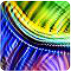
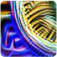
Each neuron's ideal curve, created with feature visualization, which uses optimization to find superstimuli.
Reading feature visualizations is a bit of a skill, and these images might feel disorienting if you haven't spent much time with them before. The most important thing to take away is the curve shape. You may also notice that there are bright, opposite hue colors on each side of the curve: this reflects a preference to see a change in color at the boundary of the curve. Finally, if you look carefully, you will notice small lines perpendicular to the boundary of the curve. We call this weak preference for small perpendicular lines “combing" and will discuss it later.
Every time we use feature visualization to make curve neurons fire as strongly as possible we get images of curves, even when we explicitly incentivize the creation of different kinds of images using a diversity term. This is strong evidence that curve detectors aren't polysemantic in the sense we usually use it, roughly equally preferring different kinds of stimuli.
Feature visualization finds images that maximally cause a neuron to fire, but are these superstimuli representative of the neuron's behavior? When we see a feature visualization, we often imagine that the neuron fires strongly for stimuli qualitatively similar to it, and gradually becomes weaker as the stimuli exhibit those visual features less. But one could imagine cases where the neuron's behavior is completely different in the nonextreme activations, or cases where it does fire weakly for messy versions of the extreme stimulus, but also has a secondary class of stimulus to which it responds weakly.
If we want to understand how a neuron behaves in practice, there's no substitute to simply looking at how it actually responds to images from the dataset.
Dataset Analysis
As we study the dataset we'll focus on 3b:379 because some experiments required non-trivial manual labor. However, the core ideas in this section will apply to all curve detectors in 3b.
How often does 3b:379 fire? When it fires, how often does it fire strongly? And when it doesn't fire, is it often strongly inhibited, or just on the verge of firing? We can answer these questions by visualizing the distribution of activations across the dataset.
When studying ReLU networks, we find it helpful to look at the distribution of pre-activation values. Since ReLU just truncates the left hand side, it's easy to reason about the post-activation values, but it also shows us how close the neuron is to firing in other cases. 5 We find that 3b:379 has a pre-activation mean of about -200. It fires in just 11% of cases across the dataset, since negative values will be set to zero by the ReLU activation function.
If we look at a log plot of probability, we see that the activating regime follows an exponential distribution 6 , corresponding to a straight line in the plot. One consequence of this is that, since probability density decays at e−x rather than e−x2 of a Gaussian, we should expect the distribution to have long tails.
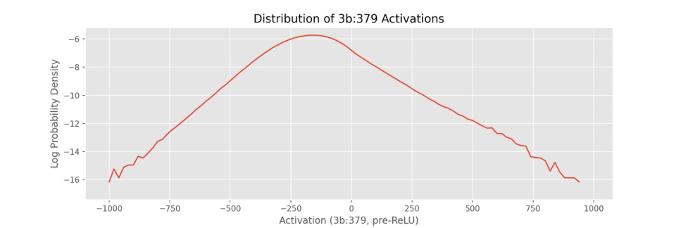
By looking at pre-ReLU values for 3b:379 activations, we see that both positive and negative values follow an exponential distribution. Since all negative values will be lifted to zero by the ReLU, 3b:379 activations are sparse, with only 11% of stimuli across the dataset causing activations.
To understand different parts of this distribution qualitatively we can render a quilt of images by activation, randomly sampling images that cause 3b:379 to activate different amounts. The quilt shows a pattern. Images that cause the strongest activations have curves that are similar to the neuron's feature visualization. Images that cause weakly positive activations are imperfect curves, either too flat, off-orientation, or with some other defect. Images that cause pre-ReLU activations near zero tend to be straight lines or images with no arcs, although some images are of curves about 45 degrees off orientation. Finally, the images that cause the strongest negative activations have curves with an orientation more than 45 degrees away from the neuron's ideal curve.
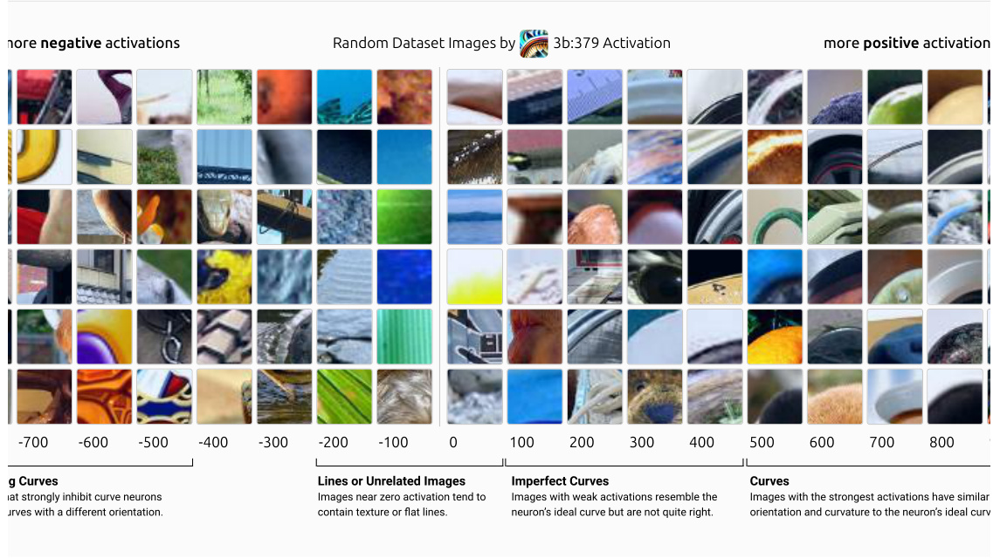
more negative activations Random Dataset Images by 3b:379 Activation more positive activation
-700 -600 -500 -400 -300 -200 -100 0 100 200 300 400 500 600 700 800 9
Quilts of images reveal patterns across a wide range of activations, but they can be misleading. Since a neuron's activation to a receptive-field sized crop of an image is just a single number, we can't be sure which part of the image caused it. As a result, we could be fooled by spurious correlations. For instance, since many of the images that cause 3b:379 to fire most strongly are clocks, we may think the neuron detects clocks, rather than curves.
To see why an image excites a neuron, we can use feature visualization to visualize the image's attribution to the neuron.
Visualizing Attribution
Most of the tools we use for studying neuron families, including feature visualization, can be used in context of a particular image using attribution.
There is a significant amount of work on how to do attribution in neural networks (eg. [20, 21, 22] ). These methods attempt to describe which pixels or earlier neurons are responsible for causing neurons to fire. In the general case of complex non-linear functions, there is a lot of disagreement over which attribution methods are principled and whether they are reliable [23, 24] . But in the linear-case, attribution is generally agreed upon, with most methods collapsing to the same answer. In a linear function of , x w ⋅x , the contribution of the component xi to the output is wixi . The attribution vector (or tensor) describing the contribution of each component is (w0x0, w1x1, …) .
Since a neuron’s pre-activation function and bias value is a linear function of neurons in the layer before it, we can use this generally agreed upon attribution method. In particular, curve detectors in 3b’s pre-activation value is a linear function of 3a. The attribution tensor describing how all neurons in the previous layer influenced a given neuron is the activations pointwise multiplied by the weights.
We normally use feature visualization to create a superstimulus that activates a single neuron, but we can also use it to activate linear combinations of neurons. By applying feature visualization to the attribution tensor, we are creating the stimulus that maximally activates the neurons in 3a that caused 3b:379 to fire. Additionally, we will use the absolute value of the attribution tensor, which shows us features that caused the neuron to fire and also features that inhibited it. This can be useful for seeing curve-related visual properties that influenced our cure neuron, even if that influence was to make it fire less.
Combining this together gives us FeatureVisualization(abs(W ⊙hprev)) , where W is the weights for a given neuron, and hprev is the activations of the previous hidden layer. In practice, we find it helpful to parameterize these attribution visualizations to be grayscale and transparent, making the visualization easier to read for non-experts [25] . Example code can be found in the notebook.
We can also use attribution to revisit the earlier quilt of dataset examples in more depth, seeing why each image caused 3b:379 to fire. You can click the figure to toggle between seeing raw images and attribution vector feature visualizations.
more negative activations Random Dataset Images by 3b:379 Attribution Show images more positive activation
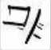
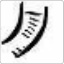
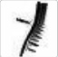
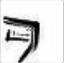
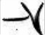
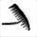
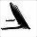
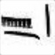
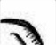
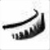
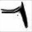
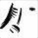
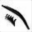
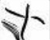
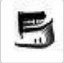
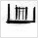
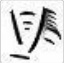
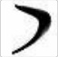
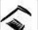
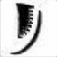
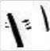
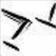
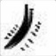
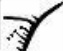
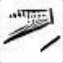
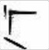
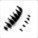
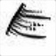
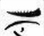
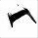
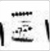
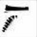
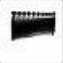
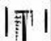
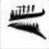
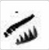
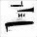
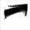
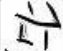
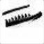
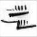
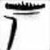
-700 -600 -500 -400 -300 -200 -100 0 100 200 300 400 500 600 700 800 9
Load more examples REPRODUCE IN A N
While the above experiment visualizes every neuron in 3a, attribution is a powerful and flexible tool that could be used to apply to studies of circuits in a variety of ways. For instance, we could visualize how an image flows through each neuron family in early vision [26] before 3b, visualizing the image's activation vector and attribution vector to curve neurons at each family along the way. Each activation vector would show what a family saw in the image, and each attribution vector would show us how it contributed to activating 3b:379.
In the next section we'll look at a less sophisticated technique for extracting information from dataset images: blindfolding yourself from seeing neuron activations and classifying images by hand.
Human Comparison
Nick Cammarata, an author of this paper, manually labelled over 800 images into four groups: curve, imperfect curve, unrelated image, or
opposing curve. We randomly sampled a fixed number of images from 3b:379 activations in bins of 100 7 . While labeling, Nick could only see the image's pixels, not additional information such as the neuron's activations or attribution visualizations. He used the following rubric in labeling:
-
Curves: The Image has a curve with a similar orientation to the neuron's feature visualization. The curve goes across most of the width of the image.
-
Imperfect Curve: The image has a curve that is similar to the neuron's feature visualization, but has at least one significant defect. Perhaps it is too flat, has an angle interrupting the arc, or the orientation is slightly off.
-
Unrelated: The image doesn't have a curve.
-
Opposing Curve: The image has a curve that differs from the neuron's feature visualization by more than 45 degrees.
After hand-labeling these images, we compared our labels to 3b:379 activations across the same images. Using a stackplot we see that 8 different labels separate cleanly into different activations .
Opposing Curve Unrelated Imperfect Curve Curve 102 images 379 images 170 images 206 imag
Still, there are many images that cause the neuron to activate but aren't classified as curves or imperfect curves. When we visualize attribution to
3b:379 we see that many of the images contain subtle curves.
-700-700 -600-600 -500-500 -400-400 -300-300 -200-200 -100-100 0 100100 200200 300300 400400 500500 600600 700700
ActivationsActivations
Conditional probability of each group by 3b:379 activation across our hand-labelled dataset of around 850 images. We see that the
Dataset examples that activate 3b:379 but were labelled "unrelated" by humans often contain subtle curves
different human labels separate into different ranges of activations.
that are revealed by visualizing the image's attribution to curve neurons.
Nick found it hard to detect subtle curves across hundreds of curve images because he started to experience the Afterimage efef ct that occurs when looking at one kind of stimulus for a long time. As a result, he found it hard to tell whether subtle curves were simply perceptual illusions. By visualizing attribution, we can reveal the curves that the neuron sees in the image, showing us curves that our labeling process missed. In these cases, it seems 3b:379 is a superhuman curve detector.
How important are different points on the activation spectrum?
These charts are helpful for comparing our hand-labelled labels but they give an incomplete picture. While 3b:379 seems to be highly selective for curve stimuli when it fires strongly, this is only a tiny fraction of cases where it fires. Most of the time, it doesn't fire at all, and when it does it's usually very weakly.
To see this, we can look at the probability density over activation magnitudes from all ImageNet examples, split into the same per-activationmagnitude (x-axis) ratio of classes as our hand labelled dataset.
Opposing Curve Unrelated Imperfect Curve Curve
102 images 379 images 170 images 206 imag
-700-700 -600-600 -500-500 -400-400 -300-300 -200-200 -100-100 0 100100 200200 300300 400400 500500 600600 700700
ActivationsActivations
While our hand-labelled dataset uniformly samples from activations, images of curves are rare within the dataset and 3b:379
activations follow an exponential distribution. In this plot we show 3b:379 activations split into the conditional probabilities of
different groups at a given activation level within our hand-labelled dataset.
From this perspective, we can't even see the cases where our neuron fires strongly! Probability density exponentially decays as we move right, and so these activations are rare. To some extent, this is what we should expect if these neurons really detect curves, since clear-cut curves rarely occur in images.
Perhaps more concerning is that, although curves are a small fraction of the cases where 3b:379 only weakly fire or didn't fire, this graph seems
to show that the majority of stimuli classified as curves also fall in these cases, as a result of neurons firing strongly being many orders of magnitude rarer. This seems to be at least partly due to labeling error and the rarity of curves (see discussion later). But it makes things a bit hard to reason about. This is why we haven't provided a precision-recall curve: recall would be dominated by the cases where the neuron didn't fire strongly and be dominated by potential labeling error as a result.
It's not clear that probability density is really the right way to think about the behavior of a neuron. The vast majority of cases are cases where the neuron didn't fire: are those actually important to think about? And if a neuron frequently barely fires, how important is that for understanding the role of a neuron in the network?
An alternative measure for thinking about the importance of different parts of the activation spectrum is contribution to expected value, x ∗p(x) . This measure can be thought of as giving an approximation at how much that activation value influences the output of the neuron, and by extension network behavior. There's still reason to think that high activation cases may be disproportionately important beyond this (for example, in max pooling only the highest value matters), but contribution to expected value seems like a reasonable estimate. 9
Opposing Curve Unrelated Imperfect Curve Curve
102 images 379 images 170 images 206 imag
-700-700 -600-600 -500-500 -400-400 -300-300 -200-200 -100-100 0 100100 200200 300300 400400 500500 600600 700700
ActivationsActivations
Contribution to the expected value of different activations, which shows how much each activation value influences the output of
a neuron. Since curves are rare within the dataset, weak neuron activations contribute most to expected value.
When we looked at probability density earlier, one might have been skeptical that 3b:379 was really a curve detector in a meaningful sense. Even if it's highly selective when it fires strongly, how can that be what matters when it isn't even visible on a probability density plot? Contribution to expected value shows us that even by a conservative measure, curves and imperfect curves form 55%. This seems consistent with the hypothesis that it really is a curve detector, and the other stimuli causing it to fire are labeling errors or cases where noisy images cause the neuron to misfire.
Our experiments studying the dataset so far has shown us that 3b:379 activations seem to correspond roughly to a human labelled judgement of whether images contain curves. Additionally, visualizing the attribution vector of these images tells us that the reason these images fire is because of the curves in the images, and we're not being fooled by spurious correlations. But these experiments are not enough to defend the claim that curve neurons detect images of curves. Since images of curves appear infrequently in the dataset, using it to systematically study curve images is difficult. Our next few experiments will focus on this directly, studying how curve neurons respond to the space of reasonable curve images.
Joint Tuning Curves
Our first two experiments suggest that each curve detector responds to curves at a different orientation. Our next experiment will help verify that they really do detect rotated versions of the same feature, and characterize how sensitive each unit is to changes in orientation.
We do this by creating a joint tuning curve 10 of how all curve detectors respond if we rotate natural dataset examples that caused a particular curve detector to fire.
Each neuron has a gaussian-like bump surrounding it's preferred orientation, and as each one stops firing another starts fire, jointly spanning all orientations of curves.
Neuron Responses to Rotated Dataset Examples
We collect dataset examples that maximally activate neuron. We rotate them by increments of 1 degree from 0 to 360 degrees and record activations.
The activations are shifted so that the points where each neuron responds are aligned. The curves are then averaged to create a typical response curve.
While tuning curves are useful for measuring neuron activations across perturbations in natural images, we're limited by the kinds of perturbations we can do on these images. In our next experiment we'll get access to a larger range of perturbations by rendering artificial stimuli from scratch.
While the dataset gives us almost every imaginable curve, they don't come labelled with data such as orientation or radius, making it hard to answer questions that require systematically measuring responses to visual properties. How sensitive are curve detectors to curvature? What orientations do they respond to? Does it matter what colors are involved? One way to get more insight into these questions is to draw our own curves. Using synthetic stimuli like this is a common method in visual neuroscience, and we've found it to also be very helpful in the study of artificial neural networks. The experiments in this section are specifically inspired by similar experiments probing for curve detecting biological neurons [27, 28] .
Since dataset examples suggest curve detectors are most sensitive to orientation and curvature, we'll use them as parameters in our curve renderer. We can use this to measure how changes in each property causes a given neuron, such as 3b:379, to fire. We find it helpful to present this as a heatmap, in order to get a higher resolution perspective on what causes the neuron to fire.
0σ Standard Deviations
We find that simple drawings can be extraordinarily exciting. The curve images that cause the strongest excitations — up to 24 standard deviations above the average dataset activation! — have similar orientation and curvature to the neuron's feature visualization.
0σ
Standard Deviations
REPRODUCE IN A NOTEBOOK
Why do we see wispy triangles?
The triangular geometry shows that curve detectors respond to a wider range of orientations in curves with higher curvature. This is because
curves with more curvature contain more orientations. Consider that a line contains no curve orientations and a circle contains every curve orientation. Since the synthetic images closer to the top are closer to lines, their activations are more narrow.
The wisps show that tiny changes in orientation or curvature can cause dramatic changes in activations, which indicate that curve detectors are fragile and non-robust. Sadly, this is a more general problem across neuron families, and we see it as early as the Gabor family in the second layer (conv2d1).
Varying curves along just two variables reveals barely-perceptible perturbations that sway activations several standard deviations. This suggests that the higher dimensional pixel-space contains more pernicious exploits. We're excited about the research direction of carefully studying neuronspecific adversarial attacks, particularly in early vision. One benefit of studying early vision families is that it's tractible to follow the whole circuit back to the input, and this could be made simpler by extracting the important parts of a circuit and studying it in isolation. Perhaps this simplified environment could give us clues into how to make neurons more robust or even protect whole models against adversarial attacks.
In addition to testing orientation and curvature, we can also test other variants like whether the curve shapes are filled, or if they have color. Dataset analyses hints that curve detectors are invariant to cosmetic properties like lighting, and color, and we can confirm this with synthetic stimuli.
Curves are invariant to fill.. ..as well as color
0σ
Standard Deviations
Synthetic Angles
Both our synthetic curve experiments and dataset analysis show that although curves are sensitive to orientation, they have a wide tolerance for the radius of curves. At the extreme, curve neurons partially respond to edges in a narrow band of orientations, which can be seen as a curve with infinite radius. This may cause us to think curve neurons actually respond to lots of shapes with the right orientation, rather than curves specifically. While we cannot systematically render all possible shapes, we think angles are a good test case for studying this hypothesis.
In the following experiment we vary synthetic angles similarly to our synthetic curves, with radius on the y axis and orientation across the x axis.
0σ
Standard Deviations
The activations form two distinct lines, with the strongest activations where they touch. Each line is where one of the two lines in the angle aligns with the tangent of the curve. The two lines touch where the angle most similar to a curve with an orientation that matches the neuron's feature visualization. The weaker activations on the right side of the activations have the same cause, but with the inhibitory half of the angle stimulus facing outwards instead of inwards.
The first stimuli we looked at were synthetic curves and the second stimuli was synthetic angles. In the next examples we show a series of stimuli that transition from angles to curves. Each column's strongest activation is stronger than the column before it since rounder stimuli are closer to curves, causing curve neurons to fire more strongly. Additionally, as each stimulus becomes rounder, their “triangles of activation" become increasingly filled as the two lines from the original angle stimuli transition into a smooth arc.
0σ 25σ
Standard Deviations
We transition from angles on the left to curves on the right, making the stimuli rounder at each step. Each step we see the REPRODUCE IN A
maximum activation for each neuron increase, and the activation "triangle" fill in as the two lines forming the original angle
becomes a single arc.
This interface is useful for seeing how different curve neurons respond to changes in multiple stimuli properties, but it's bulky. In the next section we'll be exploring curve families across different layers, and it will be helpful to have a more compact way to view activations of a curve neuron family. For this, we'll introduce a radial tuning curve.
Radial Tuning Curve
Hover to isolate a neuron
The Curve Families of InceptionV1
So far we've been looking at a set of curve neurons in 3b. But InceptionV1 actually contains curve neurons in four contiguous layers, with 3b being the third of these layers.
3a 3b 4a 4b 4c 4d 4e 5a 5b
0 1 2
input softmax
conv2d2
“conv2d2", which we sometimes shorten to "2", is the third convolutional layer in InceptionV1. It contains two types of curve detectors: concentric curves and combed edges.
Concentric curves are small curve detectors that have a preference for multiple curves at the same orientation with increasing radii. We believe this feature has a role in the development of curve detectors in 3a and 3b that are tolerant of a wide range of radii.
Combed edges detect several lines protruding perpendicularly from a larger line. These protruding lines also detect curves, making them a type of curve detector. These neurons are used to construct later curve detectors and play a part in the combing efef ct.
Looking at conv2d2 activations we see that curves respond to one contiguous range like the ones in 3b, but also weakly activate to a range on the opposite side, 180 degrees away. We call this secondary range echoes.
3a
By 3a non-concentric curve detectors have formed. In many ways they resemble the curve detectors in 3b, and in the next article we'll see how they're used to build 3b curves. One difference is that the 3a curves have echoes.
3b
These are the curve detectors we've been focusing on in this article. They have clean activations with no echoes.
You may notice that there are two large angular gaps at the top of the radial tuning curve for 3b, and smaller ones at the bottom. Why is that? One factor is that the model also has what we call double curve detectors which respond to curves in two different orientations and help fill in the gaps.
4a
In 4a the network constructs many complex shapes such as spirals and boundary detectors, and it is also the first layer to construct 3d geometry. It has several curve detectors, but we believe they are better thought of as corresponding to specific worldly objects rather than abstract shapes. Many of these curves are found in 4a's 5x5 branch, which seems to specialize in 3d geometry.
For instance, 4a:406 appears to be a upwards facing curve detector with confusing secondary behavior at two other angles. But dataset examples reveal its secret: it's detecting the tops of cups and pans viewed from an angle. In this sense, it is better viewed as a tilted 3d circle detector.
We think 4a:406 is a good example of how neural network interpretability can be subjective. We usually think of abstract concepts like curves and worldly objects like coffee cups as belonging as different kinds of things — and for most of the network they are separate. But there's a transition period where we have to make a judgement call, and 4a is that transition.
Repurposing Curve Detectors
We started studying curve neurons to better understand neural networks, not because we were intrinsically interested in curves. But during our investigation we became aware that curve detection is important for fields like aerial imaging, self-driving cars, and medical research, and there's a breadth of literature from classical computer vision on curve detection in each domain. We've prototyped a technique that leverages the curve neuron family to do a couple different curve related computer vision tasks.
One task is curve extraction [29] , the task of highlighting the pixels of the image that are part of curves. Visualizing attribution to curve neurons, as we've been doing in this article, can be seen as a form of curve extraction. Here we compare it to the commonly used Canny edge detection algorithm on an x-ray of blood vessels known as an angiogram, taken from [29] , Figure 2.1.
Angiogram example from [29] , Figure 2.1.
The attribution visualization clearly separates and illuminates the lines and curves, and displays less visual artifacts. However, it displays a strong combing efef ct — unwanted perpendicular lines emanating from the edge being traced. We're unsure how harmful these lines are in practice for this application, but we think it's possible to remove them by editing the circuits of curve neurons.
We don't mean to suggest we've created a competitive curve tracing algorithm. We haven't done a detailed comparison to state of the art curve detection algorithms, and believe it's likely that classical algorithms tuned for precisely this goal outperform our approach. Instead, our goal here is to explore how leveraging internal neural network representations opens a vast space of visual operations, of which curve extraction is just one point.
Spline Parameterization
We can access more parts of this space by changing what we optimize. So far we've been optimizing pixels, but we can also create a differentiable parameterization [25] that renders curves, similar to explorations by [30] and [31] . By backpropagating from the attribution through the input into spline knots, we can now trace curves — obtaining the equations of the best fitting spline equations that describe the curves in the image.
Occlusion Subtle Curve Ourur splines cann traceacee curvesurves even if they haveaveve significantcantnt occlusion. Furthermore, wecclusion. Furthermore, welusion. Furthermore, we. Furthermore, weFurthermore, weurthermore, we, wewe cann Since curve neurons are robust to a wide variety of natural visual features, our curve use attributionttributionbutionution to constructonstructctt complexomplex occlusioncclusionlusion rules. For. ForForor instance, weance, wence, wece, wee, we, wewe cann strongly penalizealizelize tracing algorithm can be applied to subtle curves in images.
Ourur splines cann traceacee curvesurves even if they haveaveve significantcantnt occlusion. Furthermore, wecclusion. Furthermore, welusion. Furthermore, we. Furthermore, weFurthermore, weurthermore, we, wewe cann use attributionttributionbutionution to constructonstructctt complexomplex occlusioncclusionlusion rules. For. ForForor instance, weance, wence, wece, wee, we, wewe cann strongly penalizealizelize our spline for overlapping with a particular object or texture, disincentivizing the spline from connecting visual curves that are occluded by these features.
Complex Shapes
REPRODUCE IN A NOTEBOOK
Algorithmic Composition
One seemingly unrelated visual operation is image segmentation. This can be done in an unsupervised way using non-negative matrix factorization (NMF) [30, 32] . We can visualize attribution to each of these factors with our spline parameterization to trace the curves of different objects in the image.
Source
Tracing Tracing NMF Components
Instead of factoring the activations of a single image, we can jointly factorize lots of butterflies to find the neurons in the network that respond to butterflies in general. One big difference between factoring activations and normal image segmentation is that we get groups of neurons rather than pixels. These neuron groups can be applied to find butterflies in images in general, and by composing this with differentiable spline parameterization we get a single optimization we can apply to any image that automatically finds butterflies and gives us equations to splines that fit them.
We traced 23 butterfly images and chose our 15 favorites. REPRODUCE IN A NOTEBOOK
In this above example we manipulated butterflies and curves without having to worry about the details of either. We delegated the intricacies of recognizing butterflies of many species and orientations to the neurons, letting us work with the abstract concept of butterflies.
We think this is one exciting way to fuse classical computer vision with deep learning. There is plenty of low hanging fruit in extending the technique shown above, as our spline parameterization is just an early prototype and our optimizations are using a neural network that's half a decade old. However, we're more excited by investigations of how users can explore the space between tasks than improvements in any particular task [33] . Once a task is set in stone, training a neural network for exactly that job will likely give the best results. But real world tasks are rarely specified with precision, and the harder challenge is to explore the space of tasks to find which to commit to.
For instance, a more developed version of our algorithm that automatically finds the splines of butterflies in an image could be used as a basis for turning video footage of butterflies into an animation 12 . But an animator may wish to add texture neurons and change to a soft brush parameterization to add a rotoscoping style to their animation. Since they have full access to every neuron in the render, they could manipulate attribution to fur neuron families and specific dog breeds, changing how fur is rendered on specific species of dogs across the entire movie. Since none of these algorithms require retraining a neural network or any training data, in-principle an animator could explore this space of algorithms in real time, which is important because tight feedback loops can be crucial in unlocking creative potential.
The Combing Phenomenon
One curious aspect of curve detectors is that they seem to be excited by small lines perpendicular to the curve, both inwards and outwards. You can see this most easily by inspecting feature visualizations. We call this phenomenon "combing."
Combing seems to occur across curve detectors from many models, including models trained on Places365 instead of ImageNet. In fact, there's some weak evidence it occurs in biological neural networks as well: a team that ran a process similar to feature visualization on a biological neuron in a Macaque monkey's V4 region of the visual cortex found a circular shape with outwardly protruding lines to be one of the highest activating stimuli.
AlexNet InceptionV1 InceptionV3 Monkey V4
A number of potential explanations for combing have been proposed, with no clear forerunner.
One hypothesis is that many important curves in the modern world have perpendicular lines, such as the spokes of a wheel or the markings on the rim of a clock.
Perpindicular lines are helpful across many natural features like tires, clocks, and logos
A related hypothesis is that combing might allow curve detectors to be used for fur detection in some contexts. Another hypothesis is that a curve has higher "contrast" with perpendicular lines running towards. Recall that in the dataset examples, the strongest negative pre-ReLU activations were curves at opposite orientations. If a curve detector wants to see a strong change in orientation between the curve and the space around it, it may consider perpendicular lines to be more contrast than a solid color.
Finally, we think it's possible that combing is really just a convenient way to implement curve detectors — a side effect of a shortcut in circuit construction rather than an intrinsically useful feature. In conv2d1, edge detectors are inhibited by perpendicular lines in conv2d0. One of the things a line or curve detector needs to do is check that the image is not just a single repeating texture, but that it has a strong line surrounded by contrast. It seems to do this by weakly inhibiting parallel lines alongside the tangent. Being excited by a perpendicular line may be an easy way to implement a "inhibit an excitatory neuron" pattern which allows for capped inhibition, without creating dedicated neurons at the previous layer.
Combing is not unique to curves. We also observe it in lines, and basically any shape feature like curves that is derivative of lines. A lot more work could be done exploring the combing phenomenon. Why does combing form? Does it persist in adversarially robust models? Is it an example of what Ilyas et al [13] call a "non-robust feature"?
Conclusion
Compared to fields like neuroscience, artificial neural networks make careful investigation easy. We can read and write to every weight in the neural network, use gradients to optimize stimuli, and analyze billions of realistic activations across a dataset. Composing these tools lets us run a wide range of experiments that show us different perspectives on a neuron. If every perspective shows the same story, it's unlikely we're missing something big.
Given this, it may seem odd to invest so much energy into just a handful of neurons. We agree. We first estimated it would take a week to understand the curve family. Instead, we spent months exploring the fractal of beauty and structure we found.
Many paths led to new techniques for studying neurons in general, like synthetic stimuli or using circuit editing to ablate neurons behavior. Others are only relevant for some families, such as the equivariance motif or our hand-trained “artificial artificial neural network" that reimplements curve detectors. A couple were curve-specific, like exploring curve detectors as a type of curve analysis algorithms.
If our broader goal is fully reverse-engineer neural networks it may seem concerning that studying just one family took so much effort. However, from our experience studying neuron families at a variety of depths, we've found that it's easy to understand the basics of a neuron family. OpenAI Microscope shows you feature visualizations, dataset examples, and soon weights in just a few seconds. Since feature visualization shows strong evidence of causal behavior and dataset examples show what neurons respond to in practice, these are collectively strong evidence of what a neuron does. In fact, we understood the basics of curves at our first glance at them.
While it's usually possible to understand the main function of a neuron family at a glance, researchers engaging in closer inquiry of neuron families will be rewarded with deeper beauty. When we started, we were nervous that 10 neurons was too narrow a topic for a paper, but now we realize a complete investigation would take a book.
This article is part of the Circuits thread, an experimental format collecting invited short articles and critical commentary delving into the inner workings of neural networks.
-
← PREVIOUS ARTICLE NEXT ARTICLE →
-
An Overview of Early Vision in InceptionV1
Naturally Occurring Equivariance in Neural Networks
Footnotes
-
As discussed in Zoom In, the main issue we see is what we call polysemantic neurons which respond to multiple different features, seemingly as a way to compress many features into a smaller number of neurons. We're hopeful this can be worked around. [ ↩ ]
-
For example, genetics seems to have been optimistic in the past that genes had individual functions and that the human genome project would allow us to “mine miracles," a position which now seems to be regarded as having been naive. [ ↩ ]
-
Receptive-field sized crops of an image. [ ↩ ]
-
This is our sense from trying to implement programmatic curve detection to compare them to curve neurons. We found that practitioners generally had to choose between several algorithms, each with significant trade-offs such as robustness to different kinds of visual “noise” (for instance, texture), even in images much less complex than the natural images in ImageNet. For instance, this answer on StackOverfowl claims “The problem [of curve detection], in general, is a very challenging one and, except for toy
- examples, there are no good solutions.” Additionally, many classical curve detection algorithms are too slow to run in real-time, or require often intractable amounts of memory. [ ↩ ]
-
Looking at pre-activation values also avoids the distribution having a dirac delta peak at zero. [ ↩ ]
-
The observation that neural network activations generally follow an exponential distribution was first made to us by Brice Ménard, who observed it to be the case over all but the first layer of several networks. This is mildly surprising both because of how perfectly they seem to follow an exponential distribution, and also because one often expects linear combinations of random variables to form a Gaussian. [ ↩ ]
-
We did not cherry-pick from these bins. The data in this paper is from our first sampling of images. [ ↩ ]
-
Interestingly, during labeling Nick felt it was often difficult to place samples into groups, as many images seemed to fall within the boundaries of the rubric. We were surprised when we saw that activations clearly separate into different levels of activation. [ ↩ ]
-
If one wanted to push further on exploring the importance of different parts of the activation spectrum, they might take some notion of attribution (methods for estimating the influence of one neuron on later neurons in a particular case) and estimate the contribution to the expected value of the attribution to the logit. A simple version of this would be to look at x ∗ dlogitdx ∗ p(x) . [ ↩ ]
-
In neuroscience, tuning curves — charts of neural response to a continuous stimulus parameter — came to prominence in the early days of vision research. Observation of receptive fields and orientation-specific responses in neurons gave rise to some of the earliest theories about how low-level visual features might combine to create higher-level representations. Since then they have been a mainstay technique in the field. [ ↩ ]
-
As we explored in the article, curve neurons are robust to cosmetic properties like brightness and texture. [ ↩ ]
-
Using a shared parameterization to maintain consistency between frames. [ ↩ ]
References
- Visualizing and understanding convolutional networks [PDF]
Zeiler, M.D. and Fergus, R., 2014. European conference on computer vision, pp. 818--833.
-
Complex pattern selectivity in macaque primary visual cortex revealed by large-scale two-photon imaging Tang, S., Lee, T.S., Li, M., Zhang, Y., Xu, Y., Liu, F., Teo, B. and Jiang, H., 2018. Current Biology, Vol 28(1), pp. 38--48. Elsevier.
-
Distributed representations of words and phrases and their compositionality [PDF]
Mikolov, T., Sutskever, I., Chen, K., Corrado, G.S. and Dean, J., 2013. Advances in neural information processing systems, pp. 3111--3119.
- Visualizing and understanding recurrent networks [PDF]
Karpathy, A., Johnson, J. and Fei-Fei, L., 2015. arXiv preprint arXiv:1506.02078.
- Learning to generate reviews and discovering sentiment [PDF]
Radford, A., Jozefowicz, R. and Sutskever, I., 2017. arXiv preprint arXiv:1704.01444.
- Object detectors emerge in deep scene cnns [PDF]
Zhou, B., Khosla, A., Lapedriza, A., Oliva, A. and Torralba, A., 2014. arXiv preprint arXiv:1412.6856.
- Feature Visualization [link]
Olah, C., Mordvintsev, A. and Schubert, L., 2017. Distill. DOI: 10.23915/distill.00007
-
Network Dissection: Quantifying Interpretability of Deep Visual Representations [PDF] Bau, D., Zhou, B., Khosla, A., Oliva, A. and Torralba, A., 2017. Computer Vision and Pattern Recognition.
-
On Interpretability and Feature Representations: An Analysis of the Sentiment Neuron
Donnelly, J. and Roegiest, A., 2019. European Conference on Information Retrieval, pp. 795--802.
-
Measuring the tendency of CNNs to Learn Surface Statistical Regularities [PDF] Jo, J. and Bengio, Y., 2017. arXiv preprint arXiv:1711.11561.
-
ImageNet-trained CNNs are biased towards texture; increasing shape bias improves accuracy and robustness [PDF] Geirhos, R., Rubisch, P., Michaelis, C., Bethge, M., Wichmann, F.A. and Brendel, W., 2018. arXiv preprint arXiv:1811.12231.
-
Approximating cnns with bag-of-local-features models works surprisingly well on imagenet [PDF] Brendel, W. and Bethge, M., 2019. arXiv preprint arXiv:1904.00760.
-
Adversarial examples are not bugs, they are features [PDF]
- Ilyas, A., Santurkar, S., Tsipras, D., Engstrom, L., Tran, B. and Madry, A., 2019. Advances in Neural Information Processing Systems, pp. 125--136.
- On the importance of single directions for generalization [PDF]
- Morcos, A.S., Barrett, D.G., Rabinowitz, N.C. and Botvinick, M., 2018. arXiv preprint arXiv:1803.06959.
- Visualizing higher-layer features of a deep network [PDF]
Erhan, D., Bengio, Y., Courville, A. and Vincent, P., 2009. University of Montreal, Vol 1341, pp. 3.
- Deep inside convolutional networks: Visualising image classification models and saliency maps [PDF]
Simonyan, K., Vedaldi, A. and Zisserman, A., 2013. arXiv preprint arXiv:1312.6034.
- Deep neural networks are easily fooled: High confidence predictions for unrecognizable images [PDF]
- Nguyen, A., Yosinski, J. and Clune, J., 2015. Proceedings of the IEEE Conference on Computer Vision and Pattern Recognition, pp. 427--436. DOI: 10.1109/cvpr.2015.7298640
- Inceptionism: Going deeper into neural networks [HTML]
Mordvintsev, A., Olah, C. and Tyka, M., 2015. Google Research Blog.
- Plug & play generative networks: Conditional iterative generation of images in latent space [PDF]
- Nguyen, A., Clune, J., Bengio, Y., Dosovitskiy, A. and Yosinski, J., 2016. arXiv preprint arXiv:1612.00005.
- Axiomatic attribution for deep networks [PDF]
Sundararajan, M., Taly, A. and Yan, Q., 2017. arXiv preprint arXiv:1703.01365.
-
Grad-cam: Why did you say that? visual explanations from deep networks via gradient-based localization [PDF] Selvaraju, R.R., Das, A., Vedantam, R., Cogswell, M., Parikh, D. and Batra, D., 2016. arXiv preprint arXiv:1610.02391.
-
PatternNet and PatternLRP--Improving the interpretability of neural networks [PDF]
Kindermans, P., Schutt, K.T., Alber, M., Muller, K. and Dahne, S., 2017. arXiv preprint arXiv:1705.05598. DOI: 10.1007/978-3-319-10590-1_53
- The (Un)reliability of saliency methods [PDF]
Kindermans, P., Hooker, S., Adebayo, J., Alber, M., Schutt, K.T., Dahne, S., Erhan, D. and Kim, B., 2017. arXiv preprint arXiv:1711.00867.
- Sanity checks for saliency maps
Adebayo, J., Gilmer, J., Muelly, M., Goodfellow, I., Hardt, M. and Kim, B., 2018. Advances in Neural Information Processing Systems, pp. 9505--9515.
- Differentiable Image Parameterizations
- Mordvintsev, A., Pezzotti, N., Schubert, L. and Olah, C., 2018. Distill. DOI: 10.23915/distill.00012
- An overview of early vision in inceptionv1
Olah, C., Cammarata, N., Schubert, L., Goh, G., Petrov, M. and Carter, S., 2020. Distill, Vol 5(4), pp. e00024--002.
- Responses to contour features in macaque area V4
Pasupathy, A. and Connor, C.E., 1999. Journal of neurophysiology, Vol 82(5), pp. 2490--2502. American Physiological Society Bethesda, MD.
- Discrete neural clusters encode orientation, curvature and corners in macaque V4 [link]
Jiang, R., Li, M. and Tang, S., 2019. bioRxiv. Cold Spring Harbor Laboratory. DOI: 10.1101/808907
- Curve tracing and curve detection in images
Raghupathy, K., 2004.
- Synthetic Abstractions [link]
White, T., 2018.
- Neural painters: A learned differentiable constraint for generating brushstroke paintings
Nakano, R., 2019. arXiv preprint arXiv:1904.08410.
- The Building Blocks of Interpretability [link]
Olah, C., Satyanarayan, A., Johnson, I., Carter, S., Schubert, L., Ye, K. and Mordvintsev, A., 2018. Distill. DOI: 10.23915/distill.00010
- Using Artificial Intelligence to Augment Human Intelligence [link]
Carter, S. and Nielsen, M., 2017. Distill. DOI: 10.23915/distill.00009
Author Contributions
It’s often hard to separate scientific contributions by paper, as the ideas are usually developed before researchers decide where to draw the boundaries between publications. This is more pronounced in the threads format Circuits uses. We started writing a single paper on the curve family but later decided to split it into three publications grouped by neuron behavior, circuits, and model comparison. Although we’ve tried to isolate the contributions to Curve Detectors specifically, when the contributions were made we didn’t know we’d publish on these sub-topics of the curve family separately.
Interface Design & Prototyping. Many of the figures in this article started with early Colab prototypes from Chris in mid 2018, which Nick built upon and refined. Nick and Gabriel iterated together on crafting the “Smarter Curve Analysis” section.
Conceptual Contributions. In mid 2018 Chris noticed that curves formed a family and started doing early prototypes of experiments that rendered their activations into tuning curves and synthetic activation maps. Nick and Chris iterated on these early experiments to understand curve neurons in more detail, finding properties like the combing effect. The radial tuning curve was suggested and implemented by Nick. Chris proposed hand-labeling dataset examples and Nick proposed rendering their attribution vectors to causally understand them. Nick made the connection to classical curve detection, and conceived of using attribution visualizations to do curve extraction and differential spline parameterization to do curve tracking. Gabriel created a practical differential spline parameterization and wrote the code powering the curve tracing experiments. The quilt of NMF factors used to show curve tracing was inspired by earlier unpublished work by Nick and Chris.
Writing. Nick and Chris wrote the text of the article, with significant contributions from Gabe.
Infrastructure. Nick built the infrastructure for extracting figures from the paper for reproduction in Colab. Ludwig is responsible for the distributed infrastructure that was used for many experiments, and helped with the alpha parameterizations that attribution uses.
Acknowledgements
Our article was greatly improved thanks to the detailed feedback by Vincent Tjeng, Nikita Obidin, Stefan Sietzen, Dave Vladman, Fred Hohman, Nick Moran, Sophia Sanborn, Max Hodak, and Humza Iqbal.
We’d like to acknowledge Brice Menard, who encouraged us to study the statistics of neuron activations and provided more general comments as well. He was the first person we are aware of that realized that many neurons follow an exponential distribution.
We also really appreciate the conversations in the #circuits channel of the open Distill Slack, which at the time of publishing contains more than 300 people.
Updates and Corrections
If you see mistakes or want to suggest changes, please create an issue on GitHub.
Reuse
Diagrams and text are licensed under Creative Commons Attribution CC-BY 4.0 with the source available on GitHub, unless noted otherwise. The figures that have been reused from other sources don’t fall under this license and can be recognized by a note in their caption: “Figure from …”.
Citation
For attribution in academic contexts, please cite this work as
Cammarata, et al., "Curve Detectors", Distill, 2020.
BibTeX citation
@article{cammarata2020curve,
author = {Cammarata, Nick and Goh, Gabriel and Carter, Shan and Schubert, Ludwig and Petrov, Michael and Olah, Chris},
title = {Curve Detectors},
journal = {Distill},
year = {2020},
note = {https://distill.pub/2020/circuits/curve-detectors},
doi = {10.23915/distill.00024.003}
}
Distill is dedicated to clear explanations of machine learning
About Submit Prize Archive RSS GitHub Twitter ISSN 2476-0757